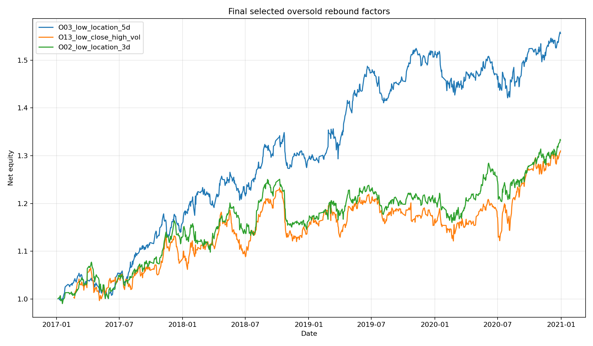

保留本轮综合评分最高的 3 个因子。信号使用 t 日收盘信息，组合收益为 t+1 收盘到收盘；成本假设为 5 bps。

| factor | observations | avg_turnover | turnover_p95 | total_return | annualized_return | annualized_vol | sharpe | max_drawdown | ic_1_mean | ic_1_ir | ic_1_hit | ic_3_mean | ic_5_mean | selection_score |
|---|---|---|---|---|---|---|---|---|---|---|---|---|---|---|
| O03_low_location_5d | 969 | 0.3822 | 0.5556 | 0.5558 | 0.1218 | 0.0841 | 1.4092 | -0.0679 | 0.0496 | 0.2537 | 0.6027 | 0.0397 | 0.0333 | 1.0938 |
| O13_low_close_high_vol | 944 | 0.3703 | 0.5500 | 0.3100 | 0.0747 | 0.0937 | 0.8162 | -0.0916 | 0.0448 | 0.2257 | 0.6049 | 0.0420 | 0.0443 | 1.0312 |
| O02_low_location_3d | 971 | 0.4848 | 0.6667 | 0.3326 | 0.0774 | 0.0851 | 0.9184 | -0.0839 | 0.0459 | 0.2324 | 0.5994 | 0.0359 | 0.0343 | 0.9844 |
样本为 2020-12-31 冻结的 50 只 HS300 成分股，存在生存偏差；结果用于研究实验。